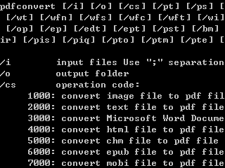

{kind=link}
Command Line

After installing PDFConvert software, click Start - Programs - PDFConvert - Command Line to show command line functions.
The full command line parameters are: pdfconvert [/i] [/o] [/cs] [/pt] [/ps] [/pa] [/pk] [/pw] [/ph] [/gr] [/gs] [/po] [/wt] [/wfn] [/wfs] [/wfc] [/wft] [/wi] [/wiw] [/wih] [/wo] [/wr] [/wul] [/wut] [/op] [/ep] [/edt] [/ept] [/pst] [/bm] [/af] [/as] [/ri] [/ci] [/ai] [/pio] [/p ir] [/pis] [/piq] [/pto] [/ptm] [/pte] [/pwo] [/pho]
PDF convert command line details:
| Parameter | Description | Format | Default Value |
|---|---|---|---|
/i |
input files, use ";" separation, such as "file_a;file_b;file_c" | ||
/o |
output folder | ||
/cs |
operation code: 1000: convert image file to pdf file 2000: convert text file to pdf file 3000: convert Microsoft Word Document file to pdf file 4000: convert html file to pdf file 5000: convert chm file to pdf file 6000: convert epub file to pdf file 7000: convert mobi file to pdf file 8000: convert pdf file to image file 9000: convert pdf file to text file 10000: convert pdf file to Microsoft Word Document file 11000: convert pdf file to html file 12000: convert pdf file to epub file 13000: convert pdf file to chm file |
||
/pt |
Set PDF file Title information | blank | |
/ps |
Set PDF file Subject information | blank | |
/pa |
Set PDF file Author information | blank | |
/pk |
Set PDF file Keywords information | blank | |
/pw |
Set PDF file page width (the unit is inches) | 8.27 inches | |
/ph |
Set PDF file page height (the unit is inches) | 11.69 inches | |
/gr |
Set PDF file graphic resolution | between 72 and 300 | 72 dpi |
/gs |
Set PDF file graphic scale rate | between 0 and 500 | 100 (%) |
/po |
Set PDF file page orientation | 0: Portait,1: Landscape | 0 |
/wt |
Set PDF file text watermarks information | blank | |
/wfn |
Set PDF file text watermarks font name | Tahoma | |
/wfs |
Set PDF file text watermarks font size | 10 | |
/wft |
Set PDF file text watermarks font style | B: Bold, I: Italic, U: Underline, S: StrikeOut | |
/wi |
Set PDF file image watermarks picture file path | ||
/wiw |
Set PDF file image watermarks picture width | picture original width | |
/wih |
Set PDF file image watermarks picture height | picture original height | |
/wo |
Set PDF file watermarks opacity | between 0 and 1 | 1 (opaque) |
/wr |
Set PDF file watermarks rotation angle | between -90 and 90 | 0 (not rotating) |
/wul |
Set PDF file watermarks left offset value | the unit is inches | 0 |
/wut |
Set PDF file watermarks top offset value | the unit is inches | 0 |
/op |
Set PDF file user password | blank | |
/ep |
Set PDF file owner password | blank | |
/edt |
Set PDF file copy restrictions of text, image and other context | 0 or 1(0: can't copy, 1: can copy) | |
/ept |
Set PDF file printing restrictions | 0 or 1 (0: can't print, 1: can print) | |
/pst |
Set PDF file encryption algorithm | between 0 and 2(0: 40bit, 1: 128bit AES, 2: 128bit ARC-FOUR) | |
/bm |
Set output mode | 1 or 2 (1: output single pdf file, 2: output multiple pdf files) | |
/af |
Set image size adaptivity | 0 or 1 (0: no, 1: yes) | autofit |
/as |
Set multiframe image split | 0 or 1 (0: no, 1:yes) | autosplit |
/ri |
Set image rows per page | between 1and 10 | 1 |
/ci |
Set image columns per page | between 1 and 10 | 1 |
/ai |
Set margin between images | between 0 and 100 | 0 |
/pio |
Set output image format | between 0 and 5 (0: JPEG file, 1:Bitmap file, 2: PNG file, 3: TIFF file, 4: GIF file, 5:EPS file) | JPEG file |
/pir |
Set output image resolution | between 72 and 300 | 72 |
/pis |
Set output image scale rate | between 1 and 500 | 100 (%) |
/piq |
Set output image quality | between 1 and 100 | 100 |
/pto |
Set output text format | 0 or 1 (0: normal text, 1: CSV text) | normal text |
/ptm |
Set output text mode | 0 or 1 (0:output single text file, 1: output multiple text file of per page) | |
/pte |
Set output text encoding format | between 0 and 3 (0: ANSI format, 1: Unicode format, 2:BigEndianUnicode format, 3: UTF8 format) | UTF8 format |
/pwo |
Set output Microsoft Word document file format | between 0 and 2(0: RTF file, 1:Word 97~2003 Doc file(.doc), 2: Word file(.docx)), | Word file(.docx) |
/pho |
Set output HTML file format | 0 or 1 (0: XHTML file, 1: HTML5 file) | XHTML file |
Continue to next step: Command Line Samples